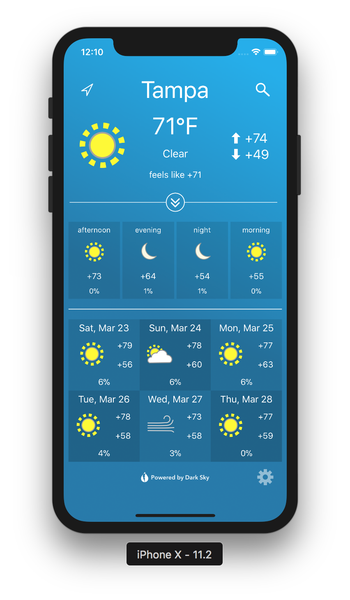
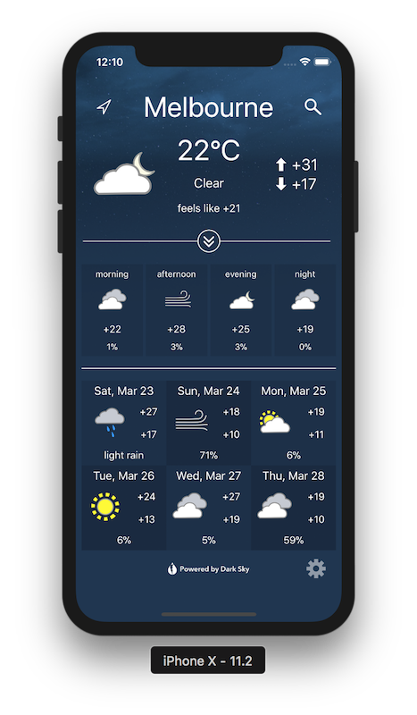

BitWeather
Lightweight and simple weather app with all essential information on a single screen. Completely ad-free and pop-up free, no chance for distraction! Just open the app, allow location access "While Using the App" (first launch), and get whole weather info at your location. Or tap search and enter a City Name to find weather in any place over the world.
Features:
 
Sources:
Data is provided by DarkSky API, which is backed-up by a wide range of weather data sources of global and regional character.
contact developer: send email